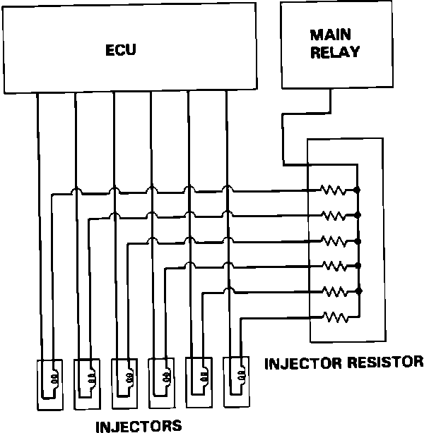

Fuel Injector Resistor: Description and Operation
Injector Resistor:

The injector resistor reduces the current supplied to the injectors to prevent damage to the injector coils. It is mounted in the engine compartment on the right side of the firewall.
The injector resistor receives power directly from the main relay. Power is fed through six (5 Ohm) parallel resistors and delivered directly from each resistor to its respective injector.